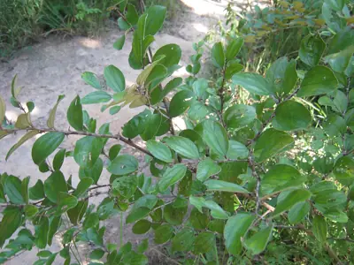

pranet · 出典付きの植物図鑑
jujube
Ziziphus nummularia (Burm.f.) Wight & Arn. · Rhamnaceae

Ziziphus nummularia, commonly known as wild jujube or jharberi in Hindi, is a species of Ziziphus native to the Thar Desert of western India and southeastern Pakistan, Afghanistan, south Iran, Iraq, the northern Arabian Peninsula, the southern Levant, and the Sinai Peninsula. Ziziphus nummularia is a shrub up to 6 metres (20 ft) or higher, branching to form a thicket. The leaves are rounded like those of Ziziphus jujuba but differ from those in having a pubescence on the adaxial surface. The plant is commonly found in arid areas, hills, plains, and agricultural fields.
出典: Wikipedia (en): Ziziphus nummularia · CC BY-SA 4.0
異名: Rhamnus nummularia Burm.f., Ziziphus microphylla Roxb., Ziziphus rotundifolia Lam.
同定や利用は自己責任でお願いします。この図鑑だけを根拠に野生の植物を食べないでください。
出典
- 学名: World Flora Online Plant List 2026-06 · CC0 1.0
- 名前: Wikipedia の記事名と Wikidata · CC0 1.0（Wikidata）。記事名は事実
- 説明: Wikipedia (en): Ziziphus nummularia · CC BY-SA 4.0
- 食用・毒性: World Checklist of Useful Plant Species (Diazgranados et al. 2020, RBG Kew) · CC BY 4.0
- 分布: World Checklist of Vascular Plants (WCVP), RBG Kew, version 2026-06-04 · CC BY 3.0
このページは pranet のデータから自動生成しています。コードは MIT、データは項目ごとのライセンス（説明）。